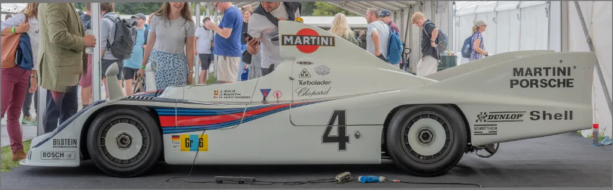
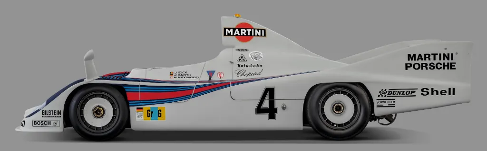
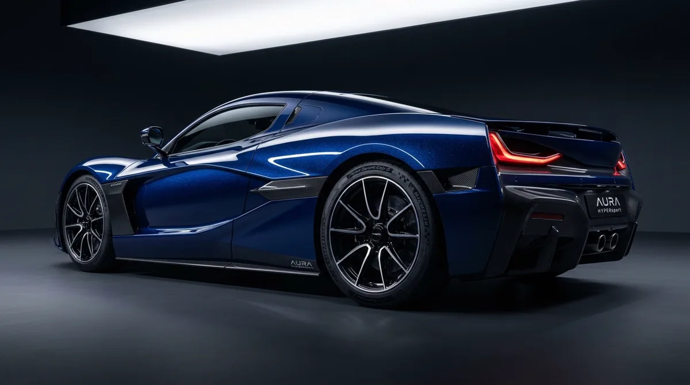
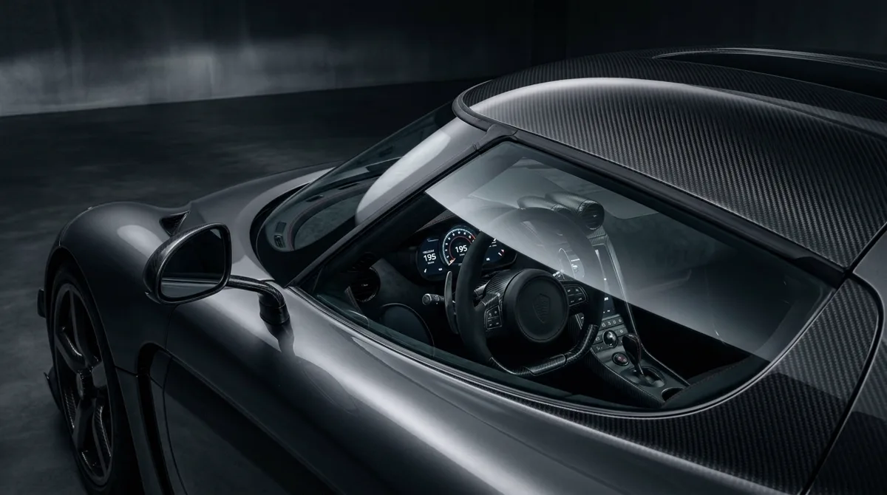
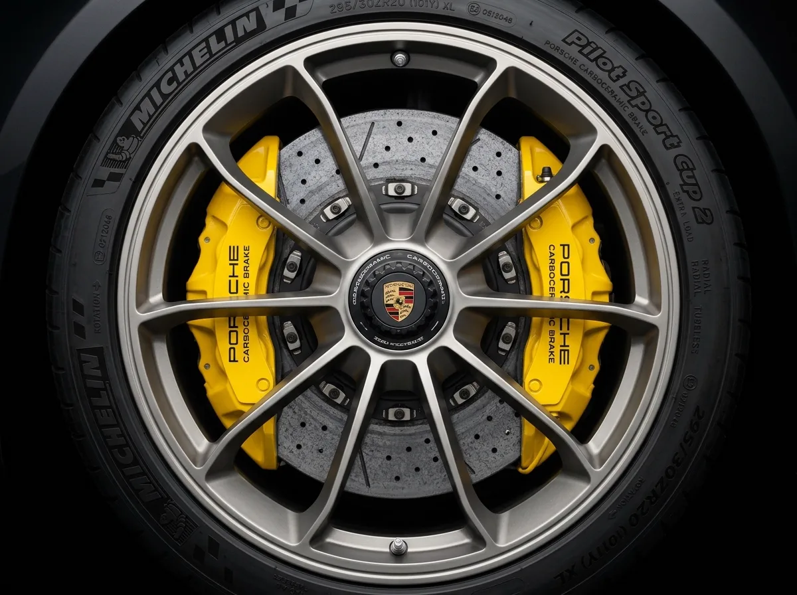
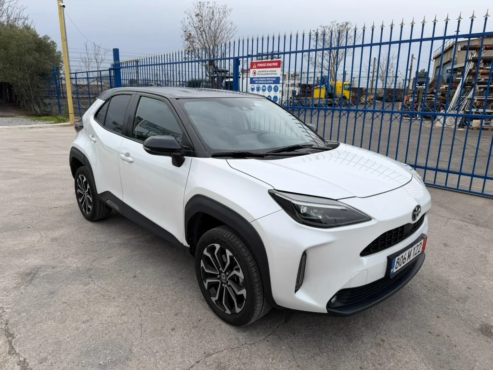
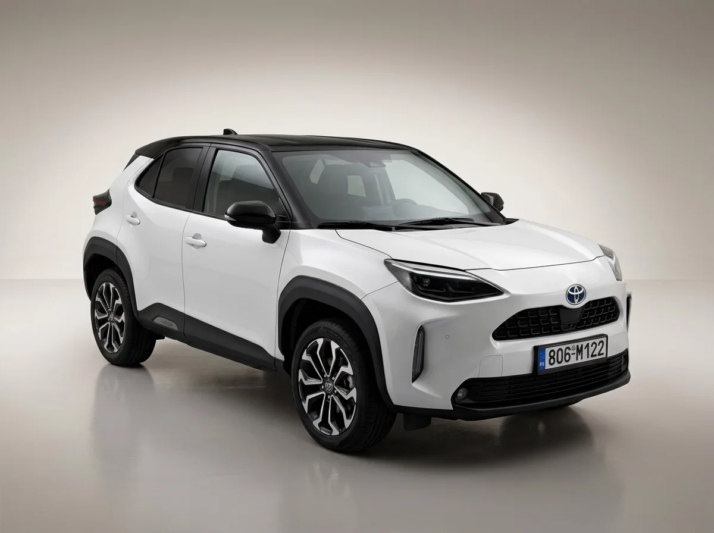
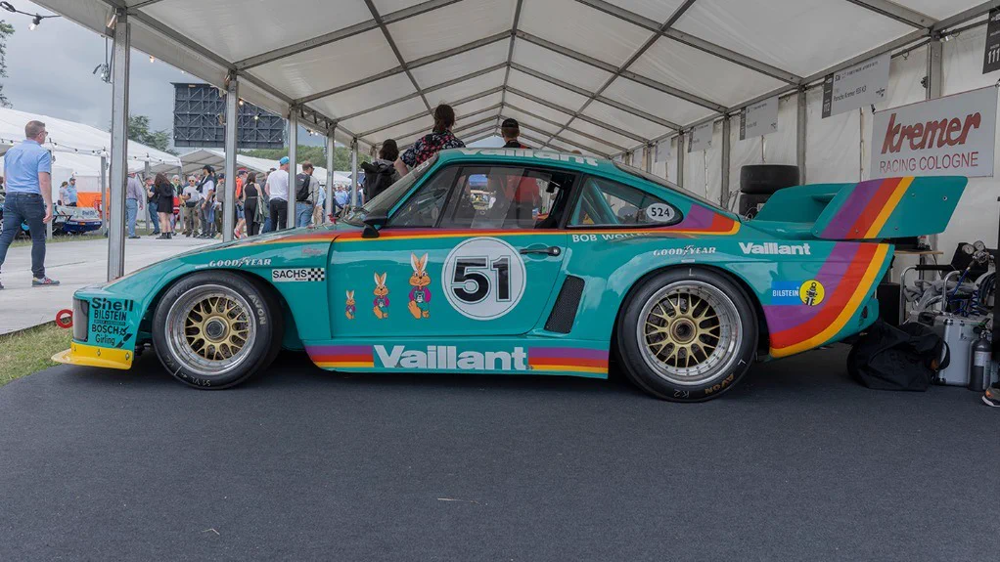
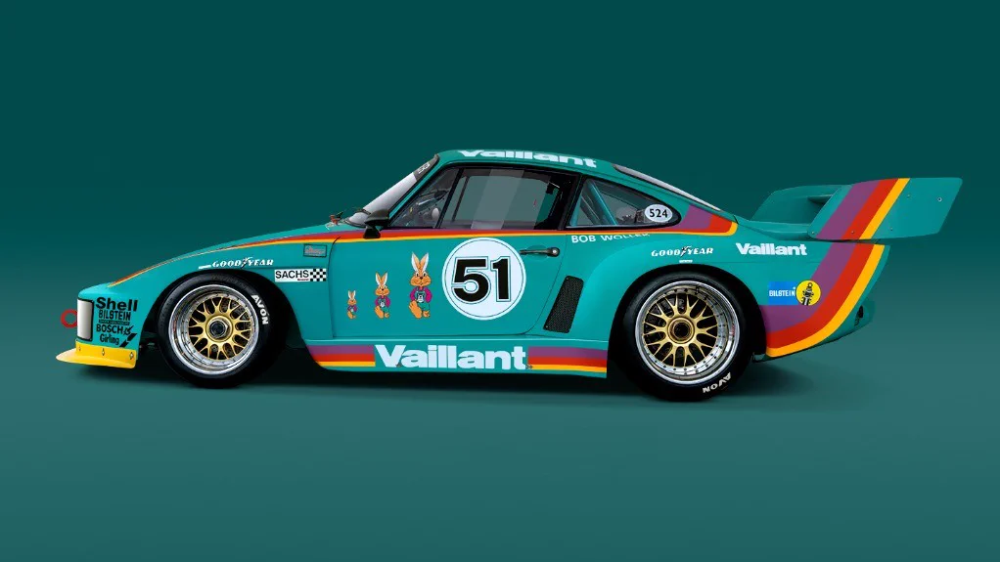

Automotive photo retouching with liquid reflections & studio precision.
Commercial automotive post-production engineered for exotic supercars, motorsport teams, advertising agencies, and volume dealerships. We transform crowded paddock tents and cluttered dealership lots into pristine infinity cyc studios with true ground contact shadows, hand-sculpted paint gloss highlights, and crystal-clear windshield interiors.
Preserving coachwork geometry while eliminating paddock chaos.
Automotive photography rarely happens in a sterile vacuum. Whether shooting trackside at Le Mans, in crowded paddock bays, or under harsh fluorescent dealership lighting, every vehicle surface acts as a curved mirror reflecting tents, crowds, power cables, and light poles.
Our philosophy: We never rely on synthetic AI filters that blur panel creases, melt decals, or fake headlight refraction. Every reflection strip is feathered by hand, every sponsor decal is razor-sharp, and every contour line stays true to the manufacturer's CAD aerodynamic profile.


What we clean vs. what we strictly preserve.
Cars have intricate mechanical personalities and sculpted aerodynamic profiles. Indiscriminate airbrushing or aggressive automated smoothing destroys body creases, erases fastener rivets, and gives tires the artificial look of cheap plastic toys.
We operate with strict post-production boundaries established over a decade of collaborating with commercial automotive photographers, OEM marketing directors, and classic auction curators.
What We Clean & Perfect
Eliminating distracting on-location chaos, asphalt blemishes, and lighting anomalies without altering the vehicle:
- Chaotic environmental reflections: Paddock awnings, spectator crowds, fence wiring, power cables, and light stand rigs.
- Dealership asphalt defects: Oil stains, puddle reflections, asphalt sealant cracks, and yellow parking lot lines.
- Surface clear-coat flaws: Micro-scratches, swirl marks, airborne dust motes, and fingerprint smudges.
- Windshield & glass flare: Window sky burn, polarized milky haze, and distracting dashboard reflection streaks.
- Wheel & tire grime: Embedded metallic brake dust on alloy barrels, tire scuff marks, and road tar film.
- Mixed lighting casts: Harsh color contamination from mixed fluorescent shop bulbs and tungsten paddock canopies.
What We Strictly Preserve
Protecting the authentic mechanical DNA, design tolerances, and aerodynamic lines of the vehicle:
- Factory shut-lines: Precise door gaps, bonnet seams, aerodynamic hood vents, and light surround margins.
- Paint chemistry: Original metallic pearl flake dispersion, clear-coat depth, and specular tone curvature.
- Livery & branding: Razor-sharp sponsor decals, livery typography, technical badging, and manufacturer crests.
- Authentic glass optics: Real glass refraction angles, interior steering wheel leather, and roll cage geometry.
- Tire mechanical details: DOT sidewall lettering, tread depth patterns, and machined alloy valve stems.
- Exotic materials: 2x2 carbon fiber twill weave alignment, titanium exhaust heat bluing, and Alcantara textures.
Auction & Consignment Honesty
For Bring a Trailer, Collecting Cars, and RM Sotheby's listings, we deliver truthful condition presentation where panel gaps, factory spot welds, and period-correct patina remain authentic while removing distracting environmental clutter.
CAD-Accurate Shut-Lines
We never paste synthetic vehicle bodies. Door seams, bonnet gaps, light cluster seals, and aerodynamic wing margins remain 100% anatomically and aerodynamically true to the vehicle's original CAD engineering.
Physical Light Direction Matching
When swapping backgrounds, we match the key light angle, softbox falloff, and color temperature of the vehicle's coachwork highlights to the new studio environment with mathematical fidelity.
Liquid paint gloss & overhead light tube sculpting.
The hallmark of high-end commercial car photography is the unbroken line of light running along the car's shoulder, bonnet, and rear haunches. On location, overhead trees, ceiling struts, or broken softbox diffusers break this line into choppy, disjointed reflections.
Using custom pen-tool paths and non-destructive dodge and burn curves, our senior retouchers sculpt continuous, feathered light tubes that accentuate the vehicle's muscular sheet metal while maintaining genuine clear coat luster and micro metallic pearl.
Shoulder Line Feathering
Smooth, tapered highlight falloffs that emphasize wheel arch flare and dynamic waistlines.
Swirl & Orange Peel Cleanup
Eliminating micro-scratches and harsh orange peel distortion while protecting clear coat depth.

Windshield glare removal & interior cockpit revealing.
Car windshields are notorious for reflecting overhead sky burn, cloud patches, and camera rigs. A cloudy, washed-out windshield robs a vehicle photo of depth and prevents viewers from appreciating the cockpit craftsmanship.
We balance polarized glass layers to eliminate milky flare while retaining authentic specular streaks. Through the pristine glass, we lift exposure on Alcantara steering wheels, carbon bucket seats, digital gauge clusters, and roll cage tubing.
- CPL Polarization Blending: Combining bracketed polarizer passes for crisp glass clarity without rainbow birefringence artifacts.
- Cockpit Shadow Recovery: Lifting deep interior shadows so steering wheels and dashboard instrumentation display rich contrast.
- Side Window Tint Harmonization: Ensuring front and rear window tints match manufacturer VLT transparency specifications.
- A-Pillar & Mirror Integration: Seamlessly masking window pillars without haloing or jagged cutout edges.

Alloy wheel detailing, caliper pop & satin tire dressing.
Wheels are the anchor of every automotive composition. Even after a thorough detailing session before the shoot, driving a vehicle onto location deposits brake dust, road tar, and gravel scuffs across the rims and tire tread.
We clean wheel barrels, remove curb rash, enhance cross-drilled carbon-ceramic rotor textures, and make Brembo, Akebono, or AMG calipers pop with bold, vibrant color. Tires receive a rich, deep-black satin dressing with zero fake oily sheen.
Brake Dust & Tar Removal
Spoke-by-spoke cleaning, removing embedded metallic brake dust and wheel weight adhesive residue.
Satin Tire Finish
Natural matte-black rubber finish with crisp DOT sidewall lettering and clean contact tread.

Dealership lot-to-studio conversion: Sell cars faster online.
Car buyers spend an average of 14 hours researching vehicles online before ever visiting a showroom. Dealership inventory photographed in outdoor parking lots under gray overcast skies with security fences and puddle reflections looks unprofessional and depresses vehicle click-through rates.
We transform bulk dealer inventory into consistent, magazine-grade virtual showroom assets. We strip away outdoor distractions, replace asphalt with a clean infinity floor, brand the background with your dealership logo, and generate realistic ambient occlusion shadows beneath the tires.

Original Outdoor Lot Photo
Busy chain-link security fence, hazard signs, industrial cranes, wet asphalt, overcast lighting, and distracting outdoor reflections across the bodywork and windows.

Clean Virtual Studio Transformation
Seamless off-white studio floor, neutral backdrop, softened glass reflections, polished white coachwork, and multi-layer ground contact shadows for 100% realism.
38% Higher VDP Click-Through
Online vehicle detail pages with studio backgrounds outperform outdoor lot photos in both engagement time and test-drive inquiries.
100% Brand Consistency
Every vehicle in your used or new inventory matches the exact same lighting, horizon line, and floor tone across Autotrader, Cars.com, and your website.
Custom Dealership Wall Graphics
We can incorporate your dealership name, manufacturer logo (BMW, Mercedes-Benz, Porsche, Toyota, Audi), and corporate colors into the studio back wall.
Tailored post-production for every automotive sector.
From limited-run hypercars destined for global billboard campaigns to volume dealer 360-spin inventory, each automotive sector requires distinct retouching priorities, color science, and file specifications.
Exotic Supercars & Hypercars
- Exposed carbon fiber 2x2 weave alignment & luster
- Active aero wing & diffuser highlight sculpting
- Bespoke leather & contrast stitching enhancement
- Multi-exposure bracket blending for ultra-wide dynamic range
Motorsport & Trackside Action
- Sponsor livery decal crispness & Pantone color accuracy
- Paddock tent, gantry & crowd distraction removal
- Wheel motion blur composites & brake rotor heat glow
- Visor tint balancing & cockpit roll bar isolation
Dealership Inventory & Marketplaces
- Rapid 12–24h overnight turnaround on volume batches
- Virtual showroom background swap & floor branding
- Dealer plate insert or subtle privacy plate blur
- Standardized 16:9 and 4:3 VDP web aspect ratio formatting
Classic Cars & Auction Consignment
- Truthful condition preservation without masking authentic patina
- Chrome bumper, wire wheel & brightwork specular polishing
- Engine bay wiring, carburetor & manifold cleaning
- Period-correct color grading matching original factory codes
Porsche 935: Paddock tent awning to clean studio extraction
Captured inside a congested trackside paddock tent with steel canopy poles, heavy ground cables, and distracting spectator crowds. We meticulously masked the complex aerodynamic rear wing, eliminated harsh reflections across the windshield, perfected the vibrant teal livery, and placed the car onto a clean studio cyc with photorealistic contact ground shadows.


100% razor-sharp preservation of vintage sponsor livery (Dunlop, Shell, Bilstein) without raster blurring.
Complete elimination of yellow awning struts, crowd reflections, power cables, and floor asphalt grime.
Multi-layer ambient occlusion shadow accurately calculated from front splitter clearance and chassis wheelbase.
Predictable pricing tiers. Zero hidden charges.
Whether you need volume background swaps for a 100-car dealer lot or meticulous billboard retouching for a flagship supercar launch, our rates are completely transparent.
Dealership Lot-to-Studio
- Hand-drawn pen tool vehicle clipping
- Virtual studio or branded dealership background
- Realistic multi-layer ground contact shadow
- License plate logo mask or privacy blur
- Window clutter reduction & horizon matching
- Turnaround: 12–24 hours (volume discounts available)
Commercial Studio Grade
- Everything in Dealership Lot-to-Studio tier
- Continuous paintwork gloss & light tube sculpting
- Swirl mark, micro-scratch & dust removal
- Windshield reflection cleanup & cockpit revealing
- Alloy wheel detailing, caliper color pop & tire dressing
- Panel gap tone balancing & chrome specular polish
- Layered 16-bit master PSD delivery upon request
Campaign Key Visual
- Multi-plate RAW bracket blending & composite plates
- CGI / photographic background location integration
- Pixel-level micro frequency separation on carbon & chrome
- Headlamp LED refraction sculpting & atmospheric bloom
- Dedicated senior retoucher & direct WhatsApp/Slack link
- Unlimited revisions until campaign sign-off
Built for automotive photographers & creative directors.
We act as the invisible, high-capacity post-production wing for commercial car photographers, creative agencies, and OEM production teams worldwide.
EIZO ColorEdge Calibrated Monitors
Every workstation is hardware-calibrated to DCI-P3 and Adobe RGB 1998 standards, ensuring metallic car paints match official OEM paint codes in print and digital.
16-Bit Layered Master PSDs
Clean, non-destructive layer hierarchies organized into clearly labeled groups: [Color Correction], [Paintwork], [Glass & Interior], [Wheels], and [Ground Shadows].
Strict NDA & Prototype Embargoes
We sign rigorous Non-Disclosure Agreements for unreleased model year launches and secret concept cars. Files are stored on encrypted servers with strict zero-public-share policies.
LUT & Lookbook Matching
Send us your color grade LUTs, Capture One session styles, or client lookbooks. We seamlessly adhere to your distinct visual signature across entire multi-day productions.
The automotive photographer's capture guide.
Small adjustments on set save hours in post-production and elevate the final image to true international advertising caliber. Here are four technical best practices recommended by our retouching team:
Bracket the CPL Filter
Take one frame polarized for the body paint to eliminate hot-spots, and a second frame rotated 90 degrees to cut windshield glare. We combine them for a perfect composite.
Turn the Wheels Outward
Always angle the front wheels slightly toward the camera lens. Showing the designer alloy face and caliper looks significantly more dynamic than black tire tread.
Use Long Strip Softboxes
Round softboxes produce circular blob highlights on curved body panels. Long continuous strip diffusers cast sleek, uninterrupted light tubes along the shoulder lines.
Expose for the Clear Coat
Protect your highlight detail by underexposing 1 to 2 stops on metallic clear coats. In 16-bit RAW, shadow details in wheel arches are easily recovered without noise.
Everything you need to know about automotive retouching.
Got questions about file delivery, volume turnarounds, or test edits? Find answers below.
What is the difference between dealership lot conversion and commercial automotive retouching?
Dealership lot-to-studio conversion is an efficient high-volume workflow designed for car dealerships and online marketplaces. We cut out the vehicle from asphalt lots, replace busy fences with a branded virtual studio or infinity cyc, generate natural contact shadows, and mask license plates. Commercial automotive retouching is an ultra-high-resolution craft for print billboards, ad campaigns, and collector magazines: we sculpt continuous paint gloss reflection tubes, eliminate windshield glare to reveal cockpit interiors, polish alloy calipers, align carbon fiber weaves, and deliver layered 16-bit master PSDs.
Can you remove distracting people, fences, and power cables from trackside or car show photos?
Yes. Paddock bays, concourses, and race tracks are filled with spectators, overhead canopy tents, power cords, and security barriers. We completely isolate the vehicle, reconstruct obscured bodywork sections, rebuild wheel spokes, and position the car against a pristine studio floor or clean racetrack backdrop without leaving clone artifacts or blurred edges.
Do you create realistic contact shadows when changing the car's background?
Absolutely. Fake-looking car cutouts occur when retouchers drop a flat drop shadow beneath the tires. We build multi-layered realistic ground shadows comprising a razor-sharp ambient occlusion contact patch directly beneath each tire, an underbody cast shadow graded to vehicle ground clearance, and a feathered directional environmental shadow that matches the primary virtual light source.
How do you handle tinted windows and cockpit interiors when swapping backgrounds?
We preserve the natural glass refraction and transparency. When swapping the background behind a vehicle, we carefully mask the windshield, rear glass, and side windows with partial opacity masks so the new studio environment or horizon appears naturally through the cabin while preserving steering wheels, roll cages, headrests, and factory tint gradients.
Can you retouch carbon fiber weaves and matte paint finishes without making them look glossy?
Yes. Matte, satin wraps, and exposed carbon fiber composites require specialized non-destructive frequency separation. We eliminate surface scuffs, handprints, and dust motes while strictly preserving the satin sheen, low-reflectance light spread, and 3D twill weave patterns without introducing glossy hot-spots.
Do you work under Non-Disclosure Agreements (NDA) for unreleased or embargoed vehicles?
Yes. We regularly retouch pre-production prototypes, embargoed manufacturer press kits, and confidential commercial ad campaigns. Our studio operates under strict confidentiality protocols on encrypted workstations with zero external cloud sharing and signed NDAs.
What file formats should I upload, and what do you deliver?
We accept RAW camera formats (CR3, ARW, NEF, RAF, DNG), multi-plate exposure brackets, 16-bit TIFFs, and JPEGs. For delivery, we provide layered master PSDs with organized adjustment groups, high-resolution 16-bit TIFFs, print-ready JPEGs, and optimized WebP files formatted for dealership DMS and VDP web servers.
How fast is your turnaround time, and can we test your quality first?
Standard orders return within 12 to 24 hours. Volume dealership batches (20–100 vehicles) are delivered overnight within 24–48 hours. We offer a 100% free, no-obligation sample edit (1–2 car photos) for dealerships, photographers, and agencies to inspect our craftsmanship before placing an order.
Explore our other retouching departments.
Beyond automotive, our studio houses dedicated teams specializing in high-fashion, luxury jewelry, and e-commerce post-production.
Model & Beauty Portraits
Authentic skin texture, micro dodge & burn, flyaway hair cleanup, and actor headshots.
Jewelry & Watch Retouching
Micro-scratch removal, diamond fire, watch dial glare reduction & gold color balancing.
Fashion & Ghost Mannequin
Invisible 3D hollow mannequin neck joins, symmetrical draping, and garment colorways.
E-Commerce Product Retouching
Eyewear, handbags, shoes, pure white cutouts, hand-drawn clipping paths, and drop shadows.
Still Life & Cosmetics
Fragrance bottles, luxury glassware, product textures, and editorial still-life lighting.